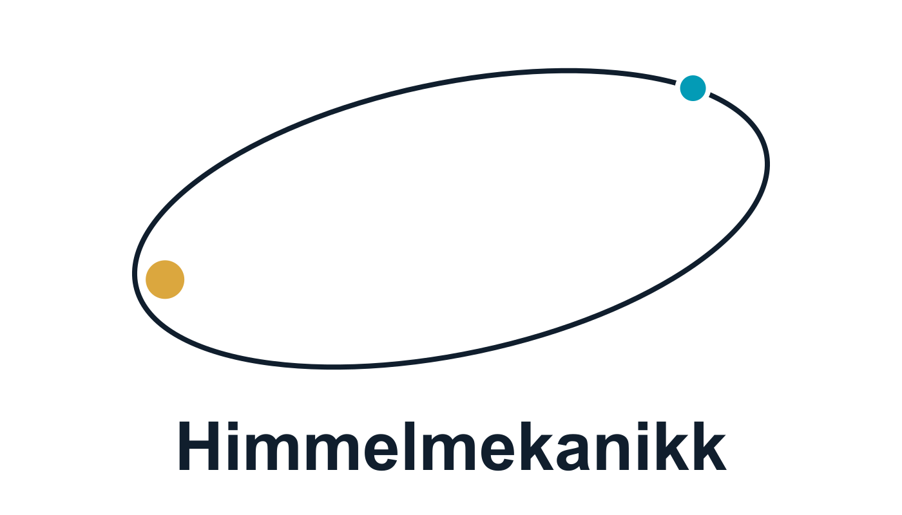
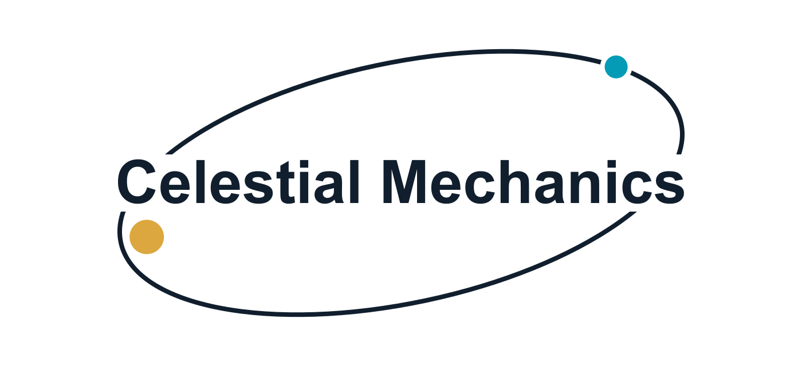

<!doctype html>
<html lang="nb">
<meta charset="utf-8">
<meta name="viewport" content="width=device-width, initial-scale=1">
<title>Himmelmekanikk — norsk og engelsk logo</title>
<style>
  * { box-sizing: border-box; }
  body { margin: 0; background: #f6f7f8; color: #101e2d; font: 16px system-ui, sans-serif; padding: 40px; }
  main { max-width: 1440px; margin: auto; display: grid; grid-template-columns: repeat(2, minmax(0, 1fr)); gap: 24px; }
  figure { margin: 0; background: white; border: 1px solid #dce3e8; border-radius: 12px; overflow: hidden; }
  figcaption { padding: 22px 28px 0; font-size: 14px; letter-spacing: .08em; color: #586773; }
  img { display: block; width: 100%; height: auto; }
  @media (max-width: 700px) { body { padding: 16px; } main { grid-template-columns: 1fr; } }
</style>
<main>
  <figure><figcaption>NORSK</figcaption></figure>
  <figure><figcaption>ENGLISH</figcaption></figure>
</main>
</html>
